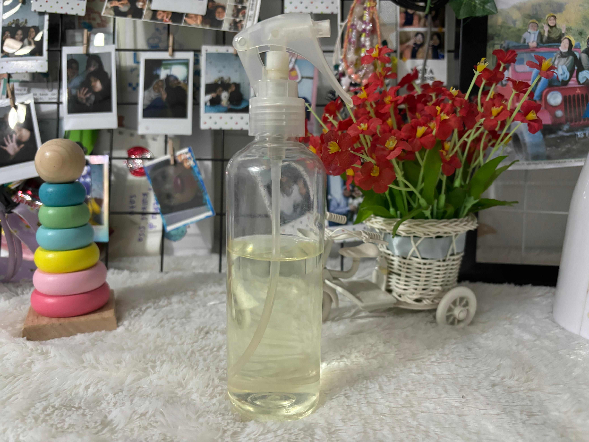

sebuah produk wirausaha yang berfokus pada layanan laundry dengan efisiensi dan kualitas tinggi.
Profil Kilat Klean Laundry

Kilat Klean Laundry bukan sekadar layanan laundry biasa, tetapi juga merupakan destinasi perawatan pakaian yang mengutamakan kualitas dan kepraktisan. Terletak strategis di pusat kota, Kilat Klean Laundry telah menjadi pilihan favorit bagi mereka yang mencari layanan laundry yang istimewa dan profesional.
Dengan tema modern dan suasana yang nyaman, Kilat Klean Laundry mengajak Anda untuk merasakan kemudahan dan efisiensi sejak pertama kali Anda mengunjungi tempat kami. Dekorasi interior yang elegan dan minimalis menciptakan atmosfer yang bersih dan rapi, mencerminkan dedikasi kami terhadap kebersihan dan kualitas. Setiap sudut ruangan dirancang untuk memberikan kenyamanan, dari ruang tunggu yang nyaman hingga area kerja yang higienis dan terorganisir
Namun, yang membuat Kilat Klean Laundry benar-benar istimewa adalah layanan dan produk unggulan yang kami tawarkan. Fokus kami pada kualitas bahan dan keahlian dalam proses pencucian dan penyetrikaan memastikan setiap pakaian yang Anda percayakan kepada kami akan mendapatkan perawatan terbaik. Setiap helai kain akan dibersihkan dengan cermat menggunakan deterjen berkualitas tinggi dan metode penyetrikaan yang tepat, sehingga pakaian Anda kembali bersih, wangi, dan rapi.
Tidak hanya itu, Kilat Klean Laundry juga dikenal karena inovasi dalam layanan. Kami terus berusaha meningkatkan kualitas dan efisiensi layanan kami dengan menggunakan teknologi terbaru dan metode yang inovatif. Dari layanan cuci gosok yang komprehensif hingga layanan gosok khusus, setiap layanan kami dirancang untuk memenuhi kebutuhan spesifik Anda. Parfum laundry dan pewangi pakaian kami juga menawarkan berbagai aroma yang menyegarkan, memastikan pakaian Anda selalu harum dan segar.
Saat Anda menggunakan layanan Kilat Klean Laundry, Anda juga akan merasakan pelayanan yang ramah dan profesional dari staf kami. Tim kami selalu siap memberikan rekomendasi yang tepat dan melayani Anda dengan senyum yang hangat. Layanan antar jemput kami yang fleksibel dan efisien memungkinkan Anda mengatur penjemputan dan pengantaran pakaian sesuai dengan jadwal Anda, sehingga Anda tidak perlu repot membawa pakaian ke tempat laundry.
Jika Anda mencari layanan laundry yang berkualitas dengan sentuhan profesional dan inovasi yang berkelanjutan, tidak ada tempat yang lebih baik selain Kilat Klean Laundry. Bersiaplah untuk merasakan kemudahan dan kepuasan dari layanan kami yang istimewa. Selamat menikmati kenyamanan dan kepraktisan dari Kilat Klean Laundry!
Paket Hemat Produk
Paket Hemat Produk di Kilat Klean Laundry adalah pilihan yang sempurna bagi para pelanggan yang ingin menikmati layanan perawatan pakaian berkualitas tinggi dengan harga yang terjangkau. Kami memahami bahwa kepuasan pelanggan tidak hanya tentang hasil akhir yang sempurna, tetapi juga tentang nilai yang diberikan atas uang yang mereka keluarkan. Oleh karena itu, kami dengan bangga mempersembahkan paket hemat produk yang memungkinkan Anda menikmati layanan laundry kami dengan harga yang ramah di kantong.
NO
PAKET HEMAT
HARGA
KETERANGAN
1
Paket Hemat Cuci Gosok
Rp7.000/kg
Kiloan
2
Paket Hemat Gosok
Rp5.000/kg
Kiloan
3
Paket Parfum Laundry
Rp80.000
Isi 2 Parfum Laundry
4
Paket Pewangi Pakaian
Rp70.000
Isi 2 Pewangi Pakaian
Cara Antar Jemput
Ingin menikmati kemudahan layanan Kilat Klean Laundry tanpa harus meninggalkan kenyamanan rumah Anda? Tak perlu khawatir! Kami menyediakan cara mudah untuk memesan layanan laundry favorit Anda dengan beberapa langkah sederhana, termasuk layanan antar jemput yang fleksibel dan efisien. antar jemput atau taruh sendiri langsung ke laundry.
Untuk antar jemput jasa laundry bisa langsung menghubungi nomor di bawah ini :
Kilat Klean Laundry bukan sekadar layanan laundry biasa; ini adalah pengalaman perawatan pakaian yang tak terlupakan. Dari komitmen mendalam terhadap kualitas hingga proses perawatan yang penuh dedikasi, setiap aspek dari Kilat Klean Laundry mencerminkan hasrat kami akan kebersihan dan keindahan.
Sejarah dan Dedikasi
Sejak berdiri, Kilat Klean Laundry selalu berfokus pada memberikan layanan terbaik bagi pelanggan. Kami memadukan teknologi modern dengan keahlian tradisional untuk memastikan setiap pakaian yang Anda percayakan kepada kami mendapatkan perawatan yang optimal. Dedikasi kami dalam menjaga kualitas dan detail pada setiap langkah proses laundry menjadikan kami pilihan utama bagi banyak pelanggan setia.
Seleksi Bahan Berkualitas: Tim Kilat Klean Laundry hanya menggunakan deterjen dan pewangi pakaian berkualitas terbaik untuk memastikan kebersihan dan keharuman pakaian Anda. Kami memprioritaskan bahan-bahan yang ramah lingkungan dan aman untuk semua jenis kain, menjamin hasil yang memuaskan dan perlindungan optimal untuk pakaian Anda.
Teknik Perawatan yang Mahir: Di Kilat Klean Laundry, proses pencucian dan penyetrikaan dilakukan dengan keahlian tinggi. Dengan menguasai teknik-teknik modern dan tradisional, setiap pakaian diperlakukan dengan perhatian khusus dan detail, memastikan kebersihan yang menyeluruh dan penampilan yang sempurna.
Presentasi yang Menawan: Kami tidak hanya fokus pada kebersihan, tetapi juga pada presentasi akhir pakaian Anda. Setiap pakaian yang keluar dari Kilat Klean Laundry disusun rapi dan disetrika dengan sempurna, memastikan pakaian Anda tampak segar dan siap digunakan. Sentuhan akhir kami menciptakan pengalaman visual yang memikat, memastikan pakaian Anda tidak hanya bersih tetapi juga terlihat menawan.
Menghidupkan Mimpi dalam Setiap Pengalaman Tak Terlupakan
Kilat Klean Laundry bukan sekadar layanan laundry biasa; ini adalah pengalaman perawatan pakaian yang tak terlupakan. Dari komitmen yang mendalam terhadap kualitas hingga proses kreatif yang penuh dedikasi, setiap aspek dari Kilat Klean Laundry mencerminkan hasrat kami akan kebersihan dan keindahan. Jika Anda mencari pengalaman perawatan pakaian yang luar biasa, jangan ragu untuk mempercayakan pakaian Anda kepada Kilat Klean Laundry. Kami berkomitmen untuk memberikan hasil terbaik dan pelayanan yang istimewa, memastikan setiap pakaian Anda mendapatkan perawatan yang layak dan memuaskan.
Pengalaman Pengguna yang Memuaskan
Ketika Anda memilih layanan Kilat Klean Laundry, Anda akan disambut oleh pengalaman yang ramah dan profesional. Suasana yang bersih dan rapi menciptakan lingkungan yang nyaman dan menyenangkan untuk mempercayakan perawatan pakaian Anda.